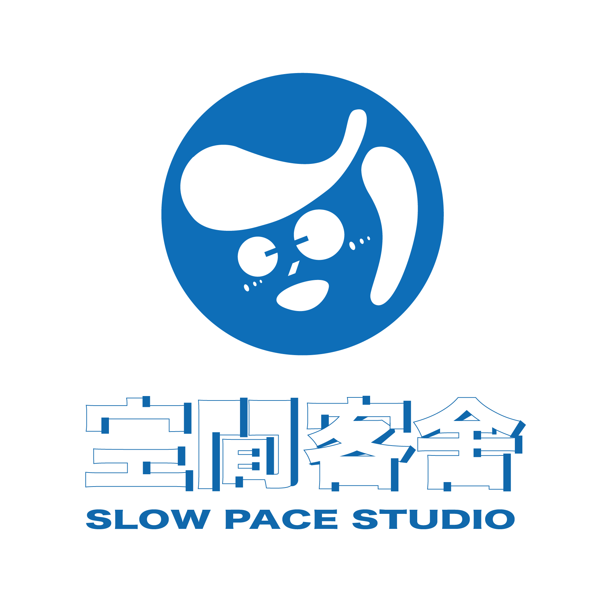

<style>
    /* 頁尾專屬全站外觀 */
    .custom-footer {
        width: 100%;
        background-color: #F7EAE3; /* 🎨 溫暖的粉米色背景 */
        border-top: 1px solid #E0D3CC;
        padding: 60px 0 40px 0;
        display: flex;
        flex-direction: column;
        align-items: center;
    }
    .footer-content {
        width: 100%;
        max-width: 1200px; 
        padding: 0 40px;
        display: flex;
        justify-content: center;
        align-items: center;
        gap: 80px; 
    }
    .footer-logo-side {
        display: flex;
        flex-direction: column;
        align-items: center;
        text-align: center;
        flex-shrink: 0;
    }
    .footer-logo-img {
        width: 300px; 
        height: auto;
        margin-bottom: 5px;
    }
    .footer-info-side {
        display: flex;
        flex-direction: column;
        gap: 20px;
        color: #1465A3; /* 🎨 深藍色字體 */
    }
    .footer-title-row {
        display: flex;
        align-items: baseline;
        gap: 15px;
    }
    .footer-title-row h3 {
        font-size: 2.2rem;
        font-weight: 500;
        letter-spacing: 2px;
    }
    .footer-title-row span {
        font-size: 1.3rem;
        font-weight: 400;
        letter-spacing: 1px;
    }
    .footer-tags {
        font-size: 1.25rem;
        font-weight: 500;
        letter-spacing: 1px;
        color: #1465A3;
    }
    .footer-details {
        font-size: 1.2rem;
        line-height: 1.8;
        font-weight: 400;
    }
    .footer-ig-link {
        display: flex;
        align-items: center;
        gap: 10px;
        text-decoration: none;
        color: #1465A3;
        font-size: 1.2rem;
        font-weight: 500;
        margin-top: 5px;
    }
    .ig-icon-placeholder {
        width: 24px;
        height: 24px;
        border: 2.5px solid #1465A3;
        border-radius: 6px;
        position: relative;
        display: inline-block;
    }
    .ig-icon-placeholder::before {
        content: '';
        position: absolute;
        width: 8px;
        height: 8px;
        border: 2.5px solid #1465A3;
        border-radius: 50%;
        top: 50%;
        left: 50%;
        transform: translate(-50%, -50%);
    }
    .ig-icon-placeholder::after {
        content: '';
        position: absolute;
        width: 2.5px;
        height: 2.5px;
        background-color: #1465A3;
        border-radius: 50%;
        top: 3px;
        right: 3px;
    }
    .footer-copyright {
        width: 100%;
        text-align: center;
        margin-top: 50px;
        padding-top: 20px;
        font-size: 1.1rem;
        color: #1465A3;
        font-weight: 400;
        letter-spacing: 0.5px;
    }

    /* 頁尾手機板優化 */
    @media (max-width: 1024px) {
        .footer-content { gap: 40px; }
    }
    @media (max-width: 768px) {
        .footer-content { flex-direction: column; gap: 30px; text-align: center; padding: 0 20px; }
        .footer-title-row { justify-content: center; flex-direction: column; align-items: center; gap: 5px; }
        .footer-ig-link { justify-content: center; }
    }
</style>

<div class="footer-content">
    <div class="footer-logo-side">
        
    </div>
    <div class="footer-info-side">
        <div class="footer-title-row">
            <h3>空間客舍</h3>
            <span>Slow Pace Studio</span>
        </div>
        <div class="footer-tags">
            #文創空間 &nbsp;#作品展示 &nbsp;#作品寄賣 &nbsp;#工作坊 &nbsp;#讀書會
        </div>
        <div class="footer-details">
            <p>營業時間：逢星期六、日 12:00 - 19:00（詳情請參考ig公佈之營運時間）</p>
            <p>地址：長沙灣青山道463-471號聯邦廣場1樓143號舖</p>
            <a href="https://www.instagram.com/slowpace_studio" target="_blank" class="footer-ig-link">
                <span class="ig-icon-placeholder"></span>
                <span>IG@slowpace_studio</span>
            </a>
        </div>
    </div>
</div>
<div class="footer-copyright">
    &copy; 2026 by Slow Pace Studio
</div>